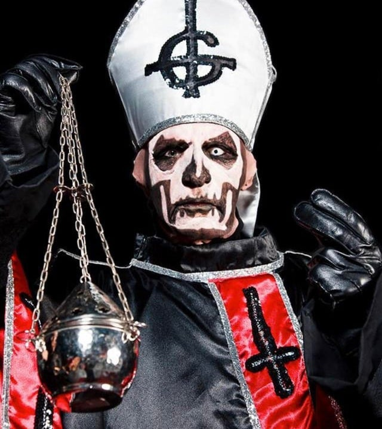
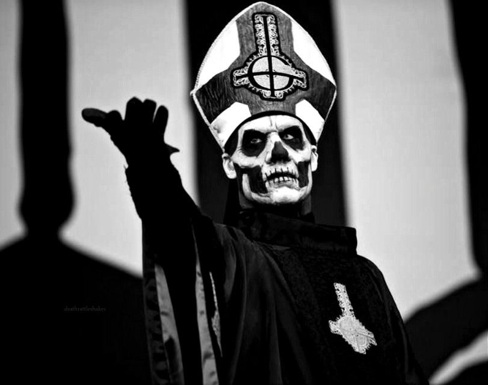
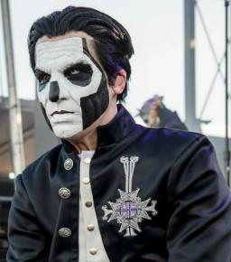
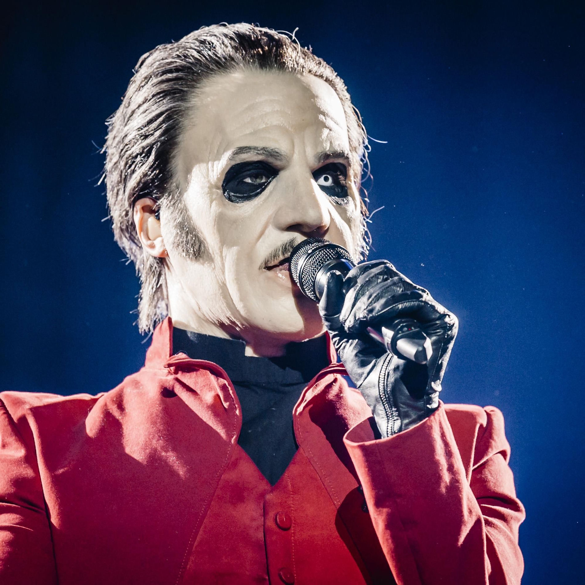
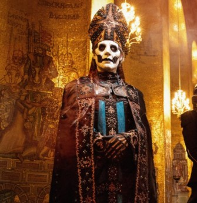

O PAPADO
A banda possui um linhagem de papas, todos interpretados por Tobias Forge
A cada novo álbum é anunciado um novo papa. Confira abaixo todos os papas que lideraram o clero!
Papa Emeritus I (2010-2012)

O patriarca que iniciou tudo na era Opus Eponymous. Com uma aura sombria e estática, ele estabeleceu as fundações do ministério.
Papa Emeritus II (2012-2015)

A figura imponente da era Infestissumam. Mais jovem e articulado que seu antecessor, trouxe uma sofisticação profana ao palco.
Papa Emeritus III (2015-2018)

O carismático líder da era Meliora. Conhecido por sua elegância e movimentos de dança, transformou os rituais em grandes espetáculos.
Cardinal Copia (2018-2021)

O primeiro a não ser um Emeritus de imediato. Com seu bigode característico e triciclo, liderou a era Prequelle antes de sua ascensão.
Papa Emeritus IV (2021-2025)

A ascensão triunfal de Copia na era Impera. Com trajes luxuosos e influência oitocentista, ele levou a banda ao topo das arenas mundiais.
Papa V Perpetua (2025-2026)

A nova e misteriosa linhagem. Com um visual que remete ao futuro e ao eterno, ele carrega o peso de manter o legado vivo nos novos rituais.